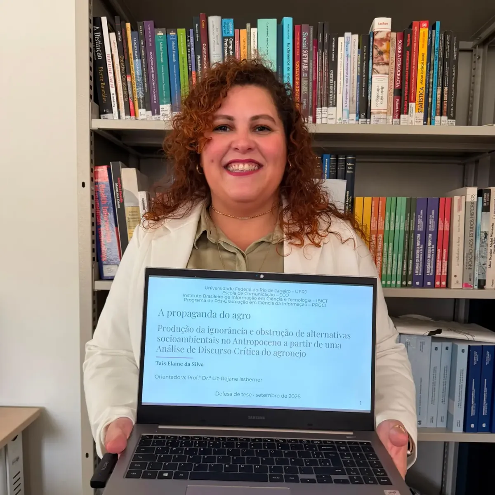
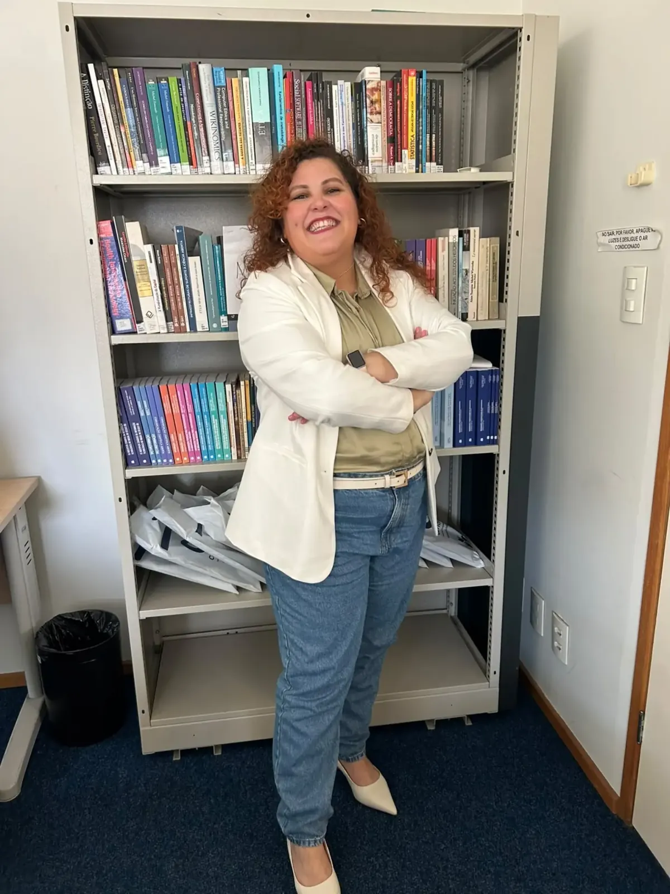
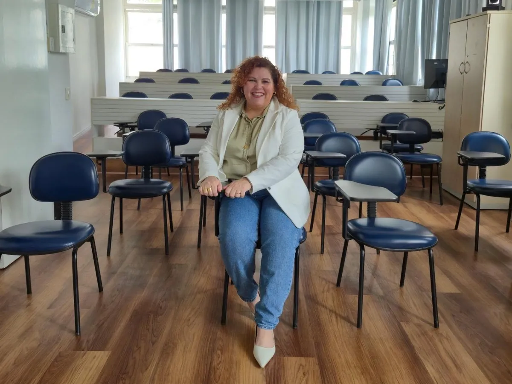
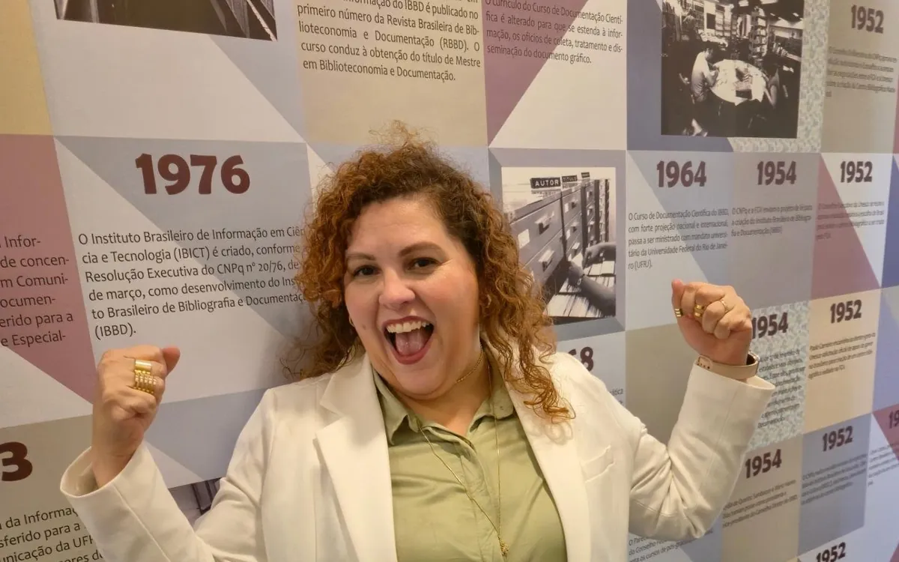
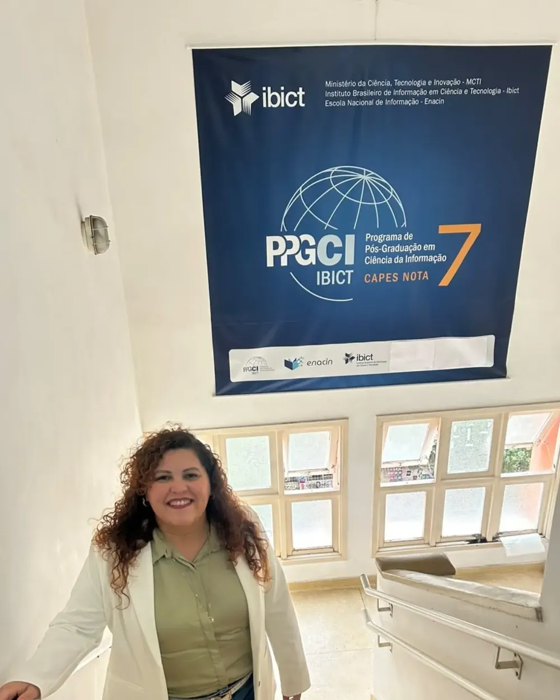
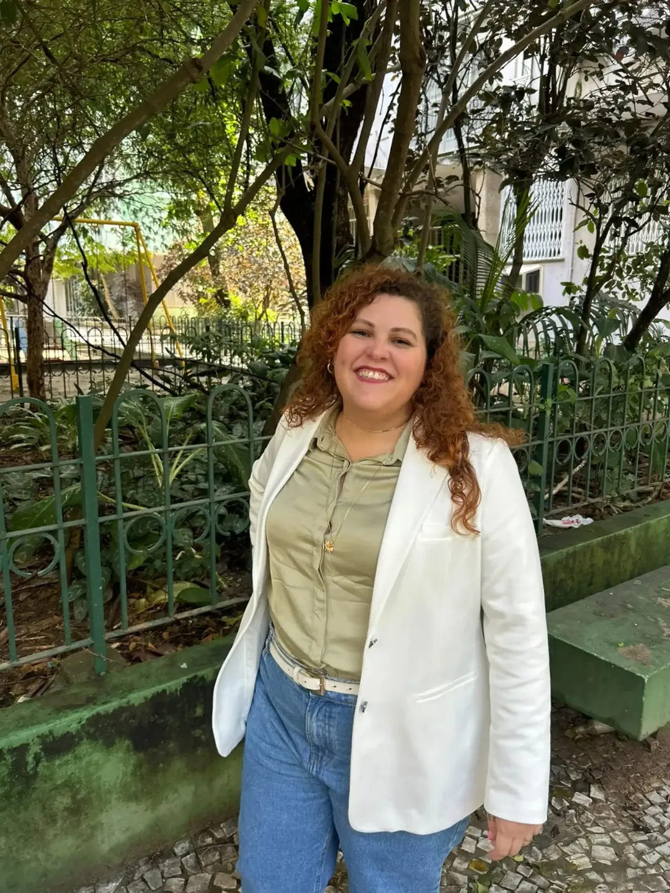

Planejamento da pesquisa
Organização dos estudos, cronograma e definição de tema e objetivos.
Bibliotecária · Doutora em Ciência da Informação
Consultoria acadêmica e mentoria de estudos
Orientação, método e acolhimento para quem está no TCC, no projeto de mestrado ou doutorado, no artigo, na dissertação ou na tese.

Como a Taís ajuda
Dúvidas metodológicas, ideias desorganizadas, bloqueio na escrita ou a sensação de não saber qual é o próximo passo. A consultoria entra exatamente aí, respeitando o momento de cada pesquisa.
Organização dos estudos, cronograma e definição de tema e objetivos.
Desenvolvimento da escrita com propósito, clareza e coerência.
Construção do caminho metodológico que responde à sua pergunta.
Estruturação das leituras e dos autores que sustentam o trabalho.
Projetos para seleções de mestrado e doutorado, do recorte ao texto final.
Orientação para artigos científicos e trabalhos para eventos.
Preparação para bancas, qualificações e apresentações orais.
Ferramentas de inteligência artificial usadas com ética para otimizar os estudos.

Quem é a Taís
Taís Elaine da Silva é bibliotecária e doutora em Ciência da Informação pelo Programa de Pós-Graduação em Ciência da Informação do IBICT, um programa nota 7 na CAPES. Conhece por dentro cada etapa da vida acadêmica: o projeto, a escrita, as dúvidas, as bancas.
Foi desse percurso que nasceu a Taís ajuda, para oferecer orientação, método e acolhimento a quem quer desenvolver sua pesquisa com mais clareza, confiança e estratégia.
"Os anos da pós-graduação foram os mais intensos da minha vida."Dra. Taís Elaine da Silva
EstratégiaCada encontro com um objetivo claro para a sua pesquisa.
ÉticaVocê aprende e escreve. A pesquisa continua sendo sua.
AcolhimentoEspaço para dúvidas, inseguranças e recomeços.
Do TCC à teseGraduação, mestrado e doutorado.
Formatos de atendimento
Todo atendimento é personalizado e acontece online. Escolha o formato que combina com o momento da sua pesquisa.

Um encontro online de 1 hora para destravar uma dúvida específica e sair com o próximo passo definido.
Suporte ao longo da trajetória, com encontros regulares do planejamento até a entrega ou a defesa.

Para quem já tem o texto escrito e quer revisá-lo antes de enviar para a seleção de mestrado ou doutorado.

Doutora pelo PPGCI IBICTPrograma nota 7 na CAPES
Leitura crítica
Antes de submeter, faça o teste que a Taís propõe: explique a sua pesquisa em três frases. Se elas não se conectam, ainda existe alguma decisão que precisa amadurecer.
O que você vai pesquisarO recorte do tema está claro?
O que você quer descobrirA pergunta e os objetivos conversam entre si?
Como pretende chegar a essa respostaO caminho metodológico sustenta a pergunta?
A banca não deveria precisar deduzir qual pesquisa você pretende fazer. Isso precisa aparecer com clareza no projeto.
Pedir leitura crítica
Conte em que etapa está a sua pesquisa e combine com a Taís o melhor formato para você.